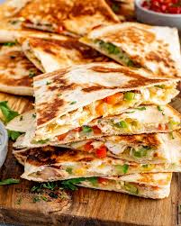

Chicken Quesadilla

Description
A delicious Mexican classic that can be consumed any time. Its simple ingredients,
of which only a tortilla, chicken, and cheese, are required, make it a fan favorite
for both kids and adults alike!
Ingredients
- 6 Tbsp. vegetable oil
- 2 bell peppers, thinly sliced
- 1/2 onion, thinly sliced
- Kosher salt
- 1 lb. boneless skinless chicken breasts, sliced into strips
- 1/2 tsp. chili powder
- 1/2 tsp. ground cumin
- 1/2 tsp. dried oregano
- 4 medium flour tortillas
- 2 cups shredded Monterey jack
- 2 cups shredded cheddar
- 1 ripe avocado, sliced
- 2 scallions, thinly sliced
- Sour cream, for serving
Steps
- In a large skillet over medium-high heat, heat 1 tbsp. neutral oil. Add peppers and onion
and season with salt. Cook until soft, 5 minutes. Transfer to a plate.
- Add 1 tbsp. neutral oil to pan and heat over medium-high heat. Add chicken to pan and season
with chili powder, cumin, dried oregano, and ½ teaspoon salt. Cook, stirring occasionally,
until golden and cooked through, 8 minutes. Transfer to a plate. Wipe out skillet.
- Add 1 tbsp. neutral in skillet. Add 1 flour tortilla to skillet and top half of the tortilla
with a heavy sprinkling of both cheeses, ¼ of the cooked chicken mixture, ¼ of the pepper-onion
mixture, a few slices of avocado, and a sprinkling of scallions. Fold the other half of the
tortilla over and cook, flipping once, until golden, 3 minutes per side.
- Repeat with remaining oil, tortillas, chicken, pepper-onion mixture, avocado, and scallions to
make 4 quesadillas.
- Slice into wedges and serve with sour cream.
Home